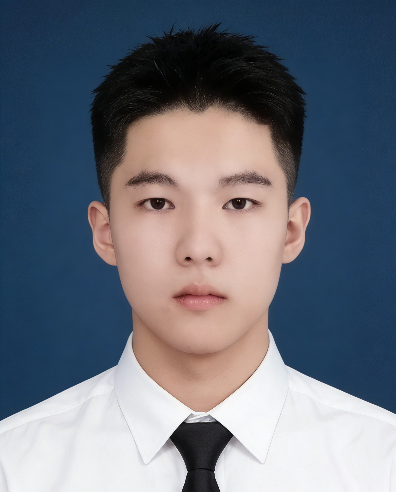
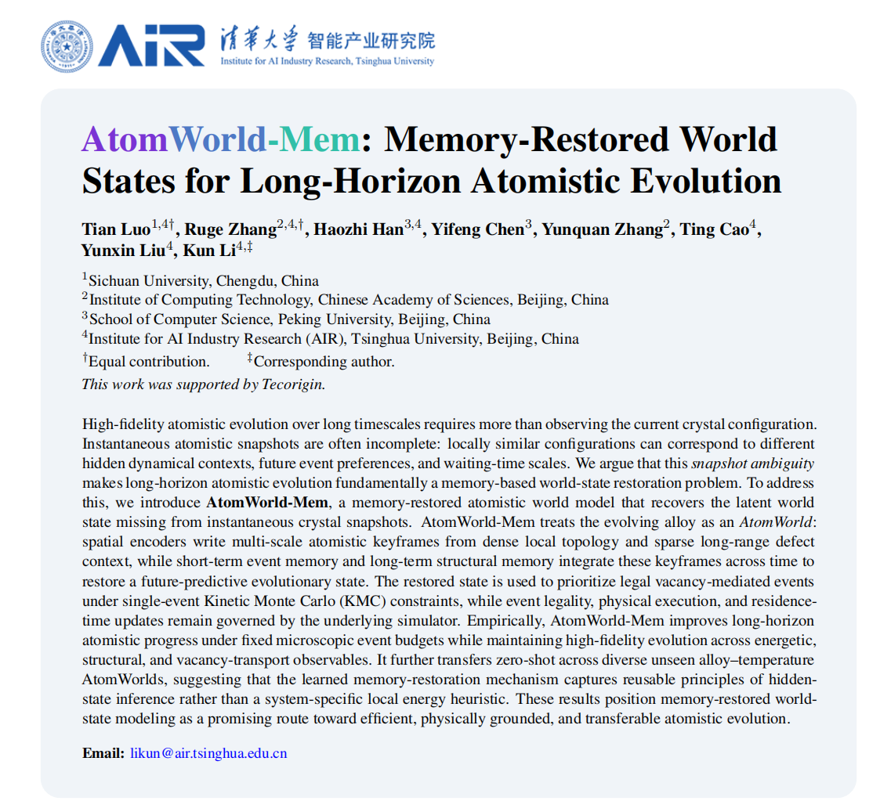

|
I am an undergraduate student at Sichuan University, pursuing dual bachelor's degrees in Mathematics and Artificial Intelligence. My research interests lie in AI for Science (AI4S), Large Language Models (LLMs), and scalable physical intelligence. I am currently a research intern at the Institute for AI Industry Research (AIR), Tsinghua University, advised by Assistant Professor Kun Li. |
 |
- Sep. 25, 2026 Our paper AtomWorld-Mem was accepted to NeurIPS 2026! It is my first research paper and was accepted on my first submission. Special thanks to Kun Li, who introduced me to research and has had a profound influence on my journey.
- Sep. 20, 2026 I received the National Scholarship for the second consecutive year! I am grateful for my hard work and for the support of my family, friends, teachers, and everyone who has helped me grow.
- Sep. 28, 2025 I received the National Scholarship as the sole recipient in my major.
 |
† Equal contribution. ‡ Corresponding author. NeurIPS 2026AtomWorld-Mem restores the hidden evolutionary state missing from instantaneous crystal snapshots, enabling physically grounded and transferable long-horizon atomistic evolution. |
 | Sichuan University 2024–2028 (expected) Undergraduate Student Dual bachelor's degrees in Mathematics and Artificial Intelligence |
| Institute for AI Industry Research (AIR), Tsinghua University Feb. 2026 – Present Research Intern Research Advisor: Assistant Professor Kun Li |
- 2025，2026 — National Scholarship
- 2025 — Comprehensive First-Class Scholarship, Sichuan University